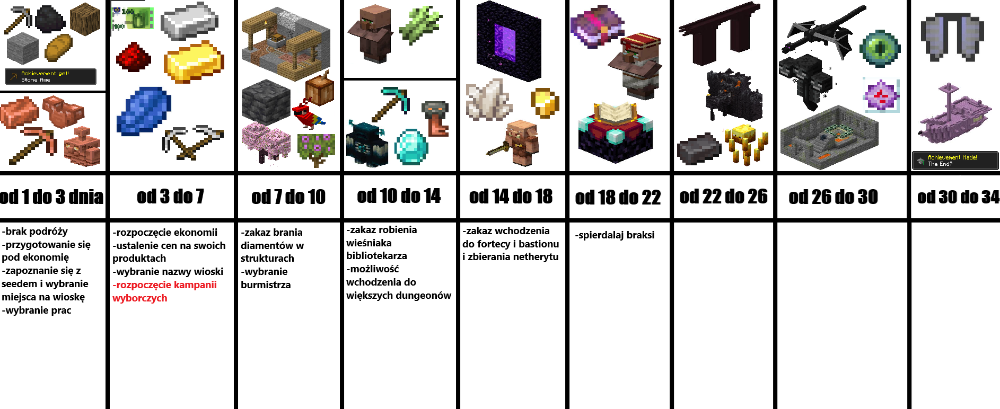

KUSTOSZE
Survival, Ekonomia i Rozwój Etapowy
📊 STATUS SERWERA
📥 DOŁĄCZ DO GRY
Aby zagrać, potrzebujesz naszej paczki modów (Fabric).
POBIERZ MODPACK (.zip)
Wersja: 26.1 | Hostowane na GitHub
🛠 MODYFIKACJE
Nasz serwer opiera się na starannie dobranej paczce modów, która poprawia optymalizację, dodaje nowe mechaniki oraz piękne dekoracje.
ZOBACZ PEŁNĄ LISTĘ
⏳ OŚ CZASU SERWERA

Przygotowanie do gospodarki, wybór miejsca na wioskę и specjalizacji.
Rozpoczęcie ekonomii, ustalanie cen i pierwsze kampanie wyborcze.
Zakaz brania diamentów ze struktur, finał wyborów Burmistrza. Zakaz budowania expiarek
Zakaz robienia wiesniaka bibliotekarza,mozliwość wchodzisć do dungeonów.
Zakaz wchodzenia do fortéc i bastionów i zbieranie Netherytu.
można budować expiarki.
Пошол нахуй медведь.Сосите хуй выродки
REGULAMIN I KONSTYTUCJA
Nieznajomość konstytucji nie zwalnia z odpowiedzialności. Każdy gracz ma obowiązek zapoznać się z zasadami panującymi na serwerze.